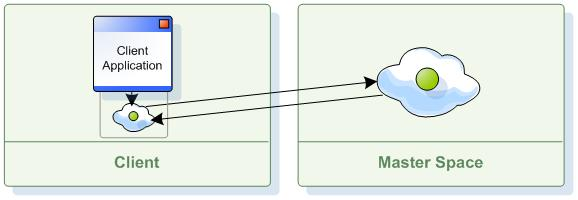

Section Summary: The IMap/JCache Cache API is abstracted in OpenSpaces by a simple wrapper: the GigaMap interface.
Overview
OpenSpaces provides a simpler Map/JCache API using the GigaMap interface, by wrapping the IMap (and the JCache Cache), and simplifying both the API and its programming model. The interface allows for declarative transactions, coherent runtime exception hierarchy, and more.
Here is a very simple example of how to define it:
Namespace
<os-core:space id="space" url="/./space" /> <os-core:map id="map" space="space"/> <os-core:giga-map id="gigaMap" map="map" />
Plain XML
<bean id="space" class="org.openspaces.core.space.UrlSpaceFactoryBean"> <property name="url" value="/./space" /> </bean> <bean id="map" class="org.openspaces.core.map.MapFactoryBean"> <property name="space" ref="space" /> </bean> <bean id="gigaMap" class="org.openspaces.core.GigaMapFactoryBean"> <property name="map" ref="map" /> </bean>
Code
IMap map = // get IMap either by injection or code creation GigaMap gigaMap = new GigaMapConfigurer(map).gigaMap();
The GigaMap interface is a thin wrapper built on top of IMap. Within a single Processing Unit (or Spring application context), several GigaMap instances can be defined, each with different characteristics.
 The IMap interface is not hidden, and can be used even when using the GigaMap interface. GigaMap simplifies most operations used with the space (compared to IMap), but some operations still require access to IMap, which can be accessed through the GigaMap API.
The IMap interface is not hidden, and can be used even when using the GigaMap interface. GigaMap simplifies most operations used with the space (compared to IMap), but some operations still require access to IMap, which can be accessed through the GigaMap API.
Cache Operations
The GigaMap provides the exact semantic as the java.util.Map interface: clear, containsKey, put, putAll, get and remove methods. In addition it includes the lock , putAndUnlock , and the unlock methods.
IMap map = // get IMap either by injection or code creation GigaMap gigaMap = new GigaMapConfigurer(map).gigaMap(); gigaMap.put(key , value); Object value = gigaMap.get(key); Object value = gigaMap.remove(key); gigaMap.lock(key); gigaMap.unlock(key);
Local Cache
The GigaMap support local cache configuration. This will provide a front end client cache that will be used with get operations. The local cache will be loaded on demand.

Here is an example for a GigaMap construct with a local cache:
<os-core:space id="space" url="jini://*/*/space" /> <os-core:local-cache id="localCacheSpace" space="space" update-mode="PULL" > <os-core:properties> <props> <prop key="space-config.engine.cache_size">50000</prop> <prop key="space-config.engine.memory_usage.high_watermark_percentage">65</prop> <prop key="space-config.engine.memory_usage.write_only_block_percentage">63</prop> <prop key="space-config.engine.memory_usage.write_only_check_percentage">60</prop> <prop key="space-config.engine.memory_usage.low_watermark_percentage">55</prop> </props> </os-core:properties> </os-core:local-cache> <os-core:map id="map" space="localCacheSpace"/> <os-core:giga-map id="gigaMap" map="map" />
Declarative Transactions
There is no need to provide a Jini transaction object for the different map operations. GigaMap with the different OpenSpaces transaction managers and Spring allow simple declarative definition of transactions. This means that if there is an ongoing transaction running, most operations performed using the GigaMap interface join it, using Spring's rich transaction support.
 It is highly recommended to read the transaction management chapter in the Spring reference documentation.
It is highly recommended to read the transaction management chapter in the Spring reference documentation.
Transaction Provider
OpenSpaces provides a pluggable transaction provider using the following interface:
public interface TransactionProvider { Transaction getCurrentTransaction(Object transactionalContext, IJSpace space); int getCurrentTransactionIsolationLevel(Object transactionalContext); }
OpenSpaces comes with a default transaction provider implementation, which uses Spring and its transaction manager in order to obtain the currently running transactions, and automatically use them under transactional operations.
GigaMap allows access to current running transactions using the transaction provider. The following code example shows how the put operation can be performed using IMap (users normally won't be required to do so):
gigaMap.getMap().put("key", "value", gigaMap.getCurrentTransaction(), 1000);
Transaction Isolation Level
GigaSpaces supports three isolation levels: READ_UNCOMMITTED, READ_COMMITTED and REPEATABLE_READ (default). When using GigaMap, the default isolation level it is performed under can be defined in the following manner:
Namespace
<os-core:space id="space" url="/./space" /> <os-core:map id="map" space="space"/> <os-core:giga-map id="gigaMap" map="map" default-isolation-level="READ_COMMITTED"/>
Plain XML
<bean id="space" class="org.openspaces.core.space.UrlSpaceFactoryBean"> <property name="url" value="/./space" /> </bean> <bean id="map" class="org.openspaces.core.map.MapFactoryBean"> <property name="space" ref="space" /> </bean> <bean id="gigaMap" class="org.openspaces.core.GigaMapFactoryBean"> <property name="map" ref="map" /> <property name="defaultIsolationLevelName" value="READ_COMMITTED" /> </bean>
Code
IMap map = // get IMap either by injection or code creation GigaMap gigaMap = new GigaMapConfigurer(map).defaultIsolationLevel(TransactionDefinition.ISOLATION_READ_COMMITTED) .gigaMap();
In addition, Spring allows you to define the isolation level on the transaction definition itself:
@Transactional(readOnly = true) public class DefaultFooService implements FooService { private GigaMap gigaMap; public void setGigaMap(GigaMap gigaMap) { this.gigaMap = gigaMap; } public Foo getFoo(String fooName) { // do something } // these settings have precedence for this method @Transactional(readOnly = false, propagation = Propagation.REQUIRES_NEW, isolation = Isolation.READ_COMMITTED) public void updateFoo(Foo foo) { // do something } }
In the above example, any operation performed using GigaMap in the updateFoo method automatically works under the READ_COMMITTED isolation level.
Exception Hierarchy
OpenSpaces is built on top of the Spring consistent exception hierarchy by translating all of the different JavaSpaces exceptions and GigaSpaces exceptions into runtime exceptions, consistent with the Spring exception hierarchy. All the different exceptions exist in the org.openspaces.core package.
OpenSpaces provides a pluggable exception translator using the following interface:
public interface ExceptionTranslator { DataAccessException translate(Throwable e); }
A default implementation of the exception translator is automatically used, which translates most of the relevant exceptions into either Spring data access exceptions, or concrete OpenSpaces runtime exceptions (in the org.openspaces.code package).